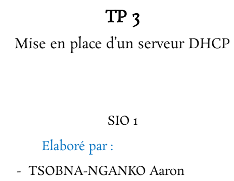
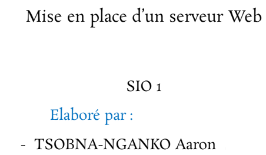

Informations personnelles
- Nom : Aaron Tsobna-Nganko
- Ville : Bruyères-le-Châtel, 91680
- Lycée : Lycée Geoffroy Saint-Hilaire, Étampes 91150
- Formation : BTS SIO SLAM - 1ère année
Étudiant BTS SIO SLAM
Je suis un jeune développeur en 1ère année de BTS SIO option SLAM, passionné par le développement web et la création de logicielles.
Je suis actuellement en BTS Services Informatiques aux Organisations, option SLAM, une formation orientée vers le développement d’applications, la gestion de données et la conception de solutions logicielles.
Lycée Geoffroy-Saint-Hilaire, Étampes
Lycée Geoffroy-Saint-Hilaire, Étampes
Lycée Paul Belmondo, Arpajon
Espace pour mon sujet de veille.
Voici quelques travaux pratiques réalisés pendant ma formation. Chaque TP peut contenir un titre et les technologies utilisées.

Technologies : Cisco Packet Tracer
Voir le TP
Technologies : Cisco Packet Tracer
Voir le TP
Technologies : Terminal Linux
Voir le TPTu peux télécharger ici ma note de synthèse liée à mes stages et à mes expériences en BTS SIO.
Email : tsobnaaaron@gmail.com
Linkedin : Aaron Tsobna-Nganko
GitHub : aarontsn.github.io